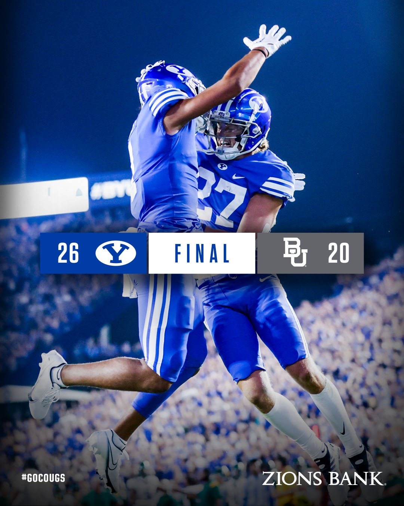

BYU Football vs Baylor

This is the final score from the greatest BYU football game I've ever atteneded
The BYU Cougars beat the top 10 ranked Baylor Bears in double overtime on September 10, 2022.
The final score was 26-20.
The BYU Cougars beat the top 10 ranked Baylor Bears in double overtime on September 10, 2022.
The final score was 26-20.
Below I will display notable stats from the game:
Stats
- Passing Leaders
- Jaren Hall: 261 yards, 1 TD
- Jaren Hall also received a TD
- Chase Roberts: 22 yards, 1 TD
- Blake Shapen: 137 yards, 1 TD
- Jaren Hall: 261 yards, 1 TD
- Rushing Leaders
- Chris Brooks: 31 yards
- Craig Williams: 68 yards
- Attendance: 63,470
Check out this awesome video the BYU Social Media Team created to remember this historic game!